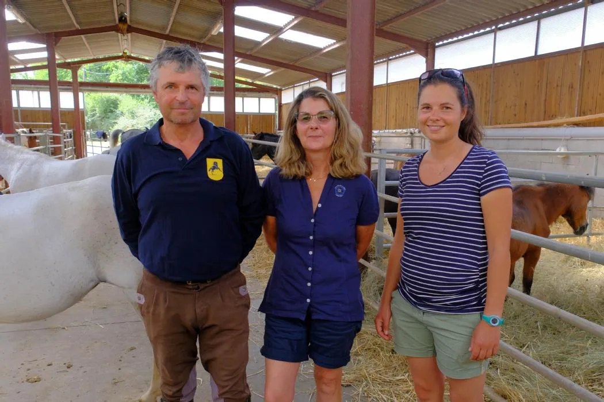
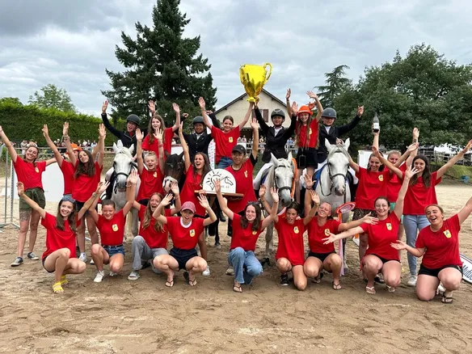
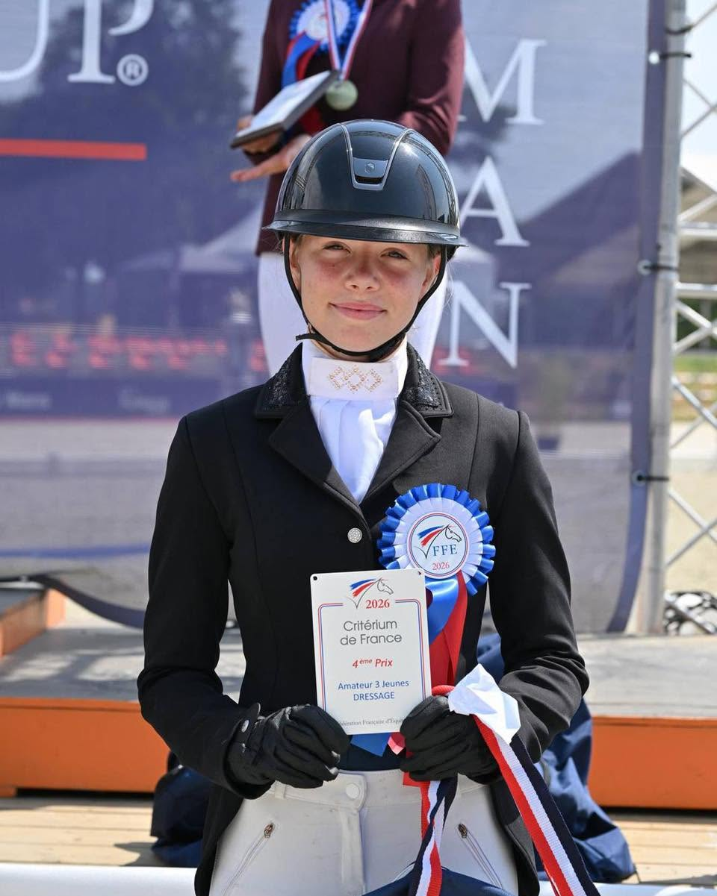
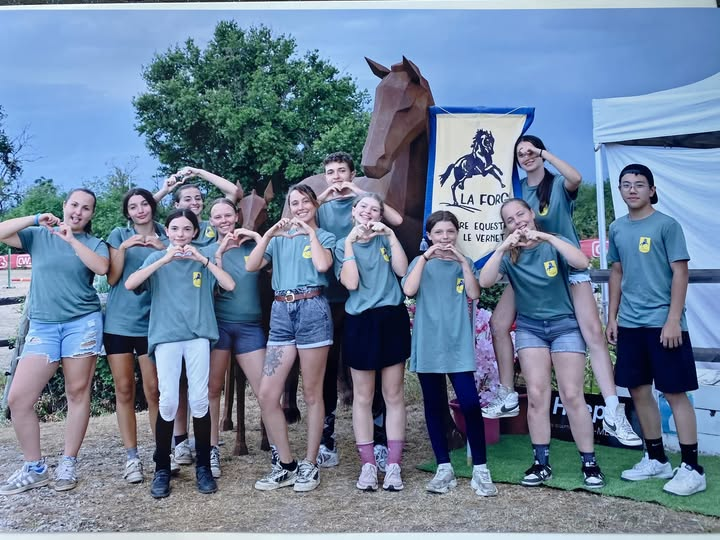
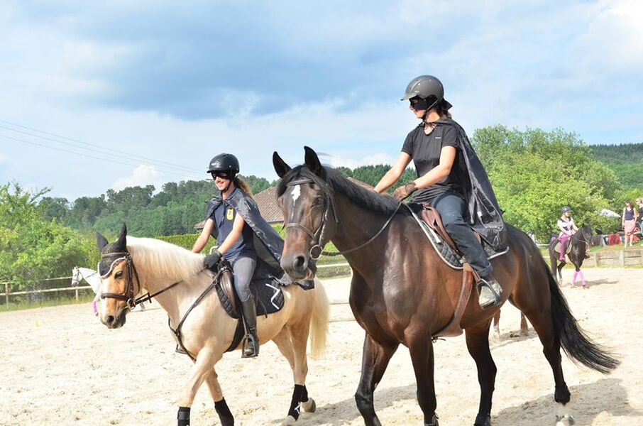

Baby Poney
Éveil équestre dès 5 ans : premiers contacts avec le poney, jeux d'équilibre et de confiance, dans un cadre rassurant.
Le Vernet · Allier · à 4 km de Vichy
Le plus grand centre équestre de l'Allier — 20 hectares de prairies, 65 chevaux et poneys, et une équipe passionnée pour former des cavaliers de 5 ans à cavalier confirmé.
Le centre
À deux pas de Vichy, le Poney Club de la Forge accueille cavaliers et cavalières sur un domaine de 20 hectares mêlant prairies, sous-bois et infrastructures complètes. Ici, chaque cheval et chaque poney a un caractère — et chaque cavalier trouve sa place, du premier galop en poney à la préparation aux épreuves de dressage et de CSO.
Écurie de propriétaires, écurie de compétition, poney club pédagogique : la Forge conjugue exigence sportive et esprit de famille, dans un cadre où l'on prend le temps — celui d'apprendre, de progresser, et de profiter du domaine.

Pédagogie
De l'éveil poney dès 5 ans à la compétition en dressage et CSO, nos moniteurs diplômés adaptent chaque séance au niveau et aux envies du cavalier.
Éveil équestre dès 5 ans : premiers contacts avec le poney, jeux d'équilibre et de confiance, dans un cadre rassurant.
Cours collectifs ou particuliers, sur poney puis cheval, avec un vrai suivi de la progression jusqu'au galop souhaité.
Débutants ou cavaliers confirmés : reprises adaptées à chaque niveau, en cours collectif ou en particulier.
Préparation et suivi en dressage et CSO, entraînement avec son propre cheval, participation aux concours régionaux.
Sorties nature à travers prairies et sous-bois, en promenade ou en randonnée, seul ou en groupe.
Stages à la journée ou à la semaine pendant les vacances scolaires : équitation, jeux et soins aux poneys.
Le domaine
Prairies, sous-bois et parcours nature pour varier les terrains de travail et de balade.
Un manège couvert et une carrière extérieure pour travailler par tous les temps.
Une cavalerie variée, choisie et adaptée à chaque niveau, du premier poney au cheval de club confirmé.
Box, pension complète et suivi personnalisé pour les cavaliers propriétaires de leur monture.
Deux gîtes ouverts toute l'année sur le domaine, pour prolonger un séjour équestre en famille.
Un lieu de vie convivial pour les cavaliers et les familles, entre deux reprises.
S'entraîner avec nous
Chaque cavalier est différent : contactez-nous pour construire la formule la plus adaptée à votre niveau, votre rythme et vos objectifs.
Idéal pour découvrir ou pour un rythme flexible.
Pour progresser régulièrement à votre rythme.
Une semaine intensive, en équipe, pendant les vacances scolaires.
En images

Concours & victoires
Dressage & compétition
Esprit d'équipe
Sorties & poney gamesAvis
★★★★☆ 4,4/5 sur Google (88 avis) · 4,7/5 sur Facebook (28 avis)
★★★★★« Cela fait longtemps que nous venons prendre des cours dans ce club et nous n'avons aucun regret ! La structure est propre et assez grande. »
Joy · Google
★★★★★« Félicitations à Schanene ! Ma petite fille Jeanne a fait un stage au centre et cette monitrice est vraiment au top, super agréable. »
Isabelle Rondepierre · Google
★★★★★« Super moment, le poney est adorable. Le stage est très bien fait, ma petite fille a bien aimé s'occuper de Pinou. »
Betty Bet · Google
★★★★★« Un centre équestre à taille humaine, des profs au top et des cours de très haute qualité. Des plus petits loulous aux adultes. »
L. M. · Google
★★★★★« Très bon centre équestre avec un professeur à l'écoute de ses élèves et surtout de ses chevaux. On y apprend à créer un lien avec sa monture. Cela fait 10 ans que j'y suis, ce n'est pour rien au monde que je changerais de club ! »
anna lprn · Google
★★★★★« Très bon centre équestre. Des professionnels de haut niveau, techniques, travail sur les fondamentaux et la sécurité du cheval et du cavalier, avant la hauteur des sauts. Beau niveau également sur le plat (dressage). Respect de l'animal. »
Alexandre · Google
★★★★☆« Accueil sympathique, moniteurs à l'écoute et intégration dans les cours en fonction du niveau de l'élève. Carrière abritée permettant des cours l'hiver à l'abri du froid et du mauvais temps. »
Denise Gueriaud · Google
★★★★★« Je suis venu ici pour le gîte, très beau cadre pour y trouver du repos et de la sérénité. »
Quentin R. · Google
★★★★★« Club sympathique, très convivial et dynamique ! Personnel très compétent et accueillant, chevaux et poneys très gentils ! Les infrastructures sont entretenues et de qualité ! »
Laura B · Google
★★★★★« Très beau centre équestre, bien agencé et très bien entretenu. Cours adaptés à tous niveaux, à recommander sans hésiter. »
Clément Rivière · Google
★★★★★« Très bel endroit pour séjourner et faire du cheval. »
Najm Faiz · Google
★★★★★« Très bon accueil. Merci de vous occuper de nos enfants comme cela ! »
Catherine Gimer · Google
★★★★★« Des supers chevaux. Des enseignants très sympa. Une super ambiance. Que du bonheur ! »
Ma vie de Cavalière · Google
★★★★★« Ma fille en fait depuis 2 ans. Centre équestre super, je le recommande. »
Aurelie Pigeron · Google
★★★★★« Mes enfants y sont. Ils sont toujours très heureux d'y aller à chaque fois. »
Nab Bel · Google
★★★★☆« Super balade en poney pour les enfants, ils ont adoré. »
César De la Serna Hernández · Google
★★★★☆« Bien placé, très propre, personnel très sympa. »
Brigitte Orine · Google
★★★★★« Très bien entretenu, de très beaux chevaux, personnel très agréable. »
Maximillien Mouton · Google
Contact
Le domaine est ouvert toute l'année. La meilleure façon de choisir sa formule reste encore de venir découvrir le centre et rencontrer l'équipe.